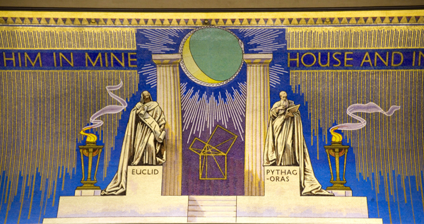

Contact Blockley Lodge
Blockley Lodge welcomes expressions of interest and joining applications from all men aged 18 and over. We also warmly welcome masonic vistors.
Please contact the Lodge Secretary for more information.
We look forward to hearing from you!
Blockley Lodge is governed by the Constitutions of the United Grand Lodge of England which is, and has always been, restricted to men. Women Freemasons have two separate Grand Lodges which are restricted to women. Anyone interested in further information about Women's Freemasonry should contact either The Order of Women Freemasons or The Honorable Fraternity of Ancient Freemasons.
